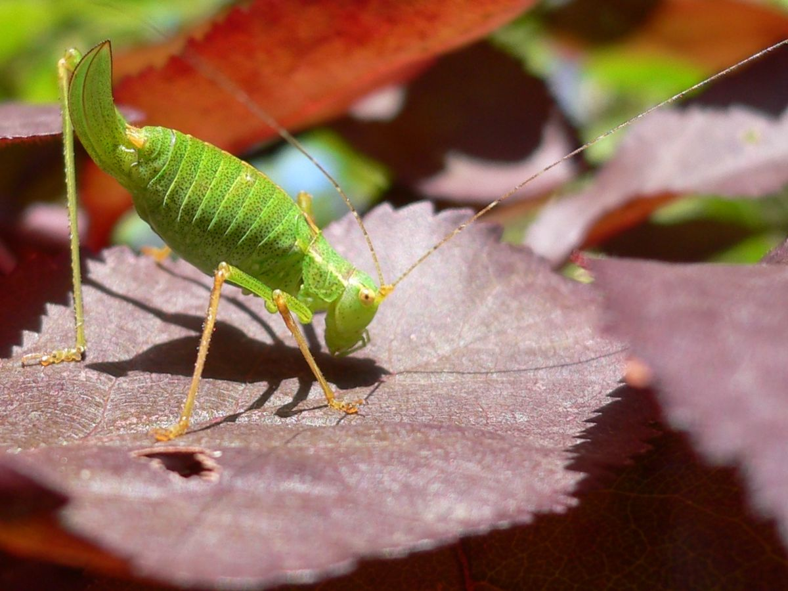

Este grupo es el de los saltamontes y grillos, que suman más de 20 000 especies. Aunque se encuentran en casi todo el mundo, disfrutan de las zonas y temporadas cálidas. En ellas, tanto las crías como los adultos se alimentan de plantas. Son animales ametábolos que no sufren metamorfosis, aunque sí mudas.
Podemos diferenciar fácilmente a este tipo de animales porque sus alas anteriores están parcialmente endurecidas (tegminas) y sus patas posteriores son grandes y fuertes, perfectamente adaptadas para saltar. Normalmente, presentan colores verdes o marrones que les ayudan a camuflarse en el medio que les rodea y esconderse de la gran cantidad de depredadores que les acechan.
